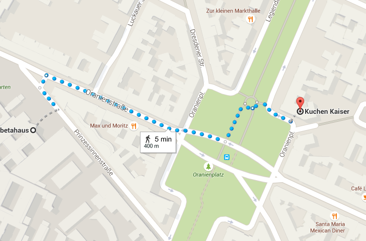

opportunities to hack together
happening now!
illustrators, coders, data scientists, designers, enterpreneurs, creatives, journalists, mathematicians, visionaries, experts about colour scales, cartographers, data wranglers, researchers, sociologists, visionaries ... and many more, and many who do not fit in a single label
the kind of diverse community which is needed for data vis challenges
Or just find the shortest path that leads you to the other members!
There is also an official tag to use for events and contents about data vis which are interesting for people in Berlin
We will probably head to KuchenKeiser for dinner
